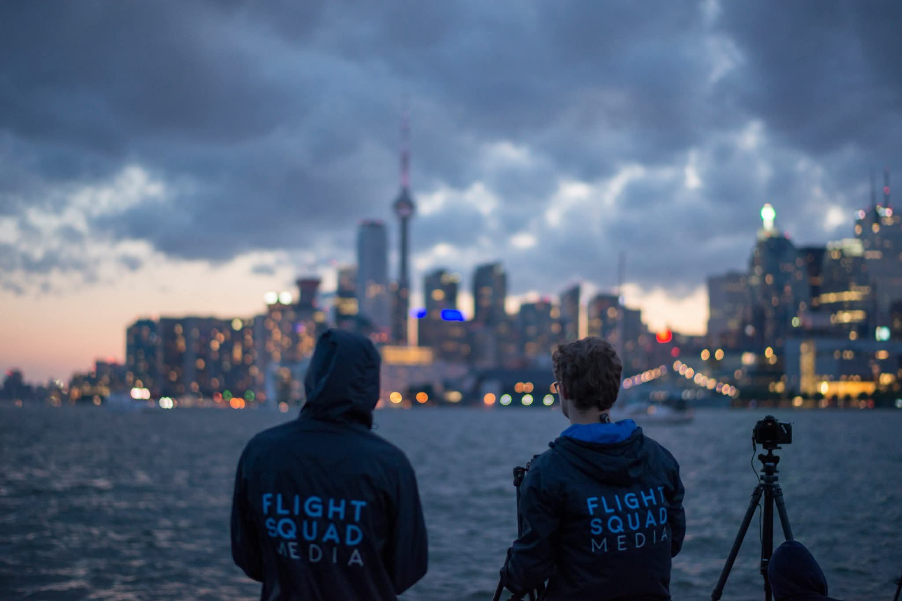
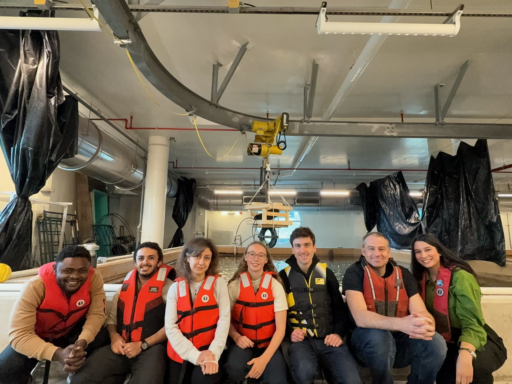

Projects
Hey there! Welcome to my projects page, where I share some of my favourite group experiences I've been apart of over the years.
Flight Squad Media - 2016
A photography and cinematography media production company developed by a group of engineering undergraduate students, who enjoy engineering, flying and filming with drones.
Back in 2017, drone cinematography was just taking flight, no pun intended, and what started out as a hobby quickly evolved into a buisness. Flight Squad Media, commonly referred
to as "FSM", was the brain-child of founder Ryan Tam, former aerospace engineer at Safran Aerospace and current CEO at Aerlift, Canada. The goal of FSM was simply to:
- Provide Easily Accessible Low-Cost Aerial Imaging
- Incorporate Aerial Cinematography into the Real-Estate Market
With the help of my brother Baron Alloway, Broker of Record at Alloway Property Group and Biomedical Engineering graduate from the University of Miami; our media production
company addressed the problem of producing aerial imagery at an affordable pricepoint. This had a postivie effect on boosting add-space for property listings and provided buyers
with an idea as to the scale of the properties they were purchasing.
In addition to real-estate, FSM promoted engineering related non-profit organizations such as FIRST Robotics and VEX Robotics, Canada. While providing free promotional aerial
cinematographic material to these organizations, FSM inspired young minds to engage in STEM (Science Technology Engineering Math) related education and carrer pathways.
While FSM is no longer a registered corporation, this small team of engineers taught me how to solve problems using unconventional solutions.


An Adaptive Real-Time Embedded System - 2024
Oh, this is one of my favourite projects and one of the first times I was introduced to acoustics. So what is an "adaptive embedded system", and how is it used? Simply put, and in the context of underwater communications (my favourite field), we need to address three major challenges when transmitting and receiving data underwater:
- Slow Sound-Speed
- Attenuation with Inceasing Frequency
- Channel Invariant Noise
To account for these variables and maintain reliable communication in a time-invariant underwater channel, a System-on-Chip (SoC) that combines components
such as a central processing and graphics processing unit onto one chip, was programmed on a Digilent Zybo Z7-10 evaluation board, to maintain low-cost. and
modularity all on a single platform. The zybo evluation board offers a platform to program hardware with real-time signal processing, and can be connected
to a power amplifier in order to improve signal strength at the level of the transmitter. The transmitting acoustic sound-source we used for this project
was a Benthowave BII-7522 acoustic transceiver, having center frequency of 27.5kHz and bandwidth of 5kHz.
It is very difficult to account for known variables in an acoustic channel, due to ambient (the drone of an engine) and site-specific (snapping shrimp) noise.
To understand channel conditions before transmission, a linear-frequency modulated chirp signal was sent using this platform, as a discovery message from the
master node to the slave node. This returns information from the channel such as propagation conditions within the channel using the JANUS protocol. In addition
to these exploratory chirp signals, a channel frequency response was recovered using frequency shift keying (FSK) with frequency hopping (FH), to verify the impulse
response of the channel. Thirteen subbands with twenty-six matched filters were used accordingly to maximize SNR at the receiver.
The images below are from an initial sea-trial in the Bedford Basin in Halifax, Nova Scotia. During this sea-trial, the group at UWSTREAM fascilliated PhD candidate Boris Nges,
with testing the adaptive transceiver range and channel estimation capabilities, by placing the sound source and recorder at a distance of three-meters apart at a depth
of five meters. The source transmitted on an FPGA board, produced 100 periods of a sinewave chirp signal from 20-45kHz at increments of 500Hz. The transmit-voltage response curve
was evaluated by measuring the sound pressure level at the receiver, offset by the path loss, and validated the manufacturers carrier frequency of 27.5kHz.
My contribuitions to the project are as follows:
- Sourcing of Parts for the Transmitter & Receiver Enclosures
- Recording Measurements of Signal Strength Between the Transmitter and Receiver
- Establishing Measured Distance of Three-Meters by Anchoring Moorings
- Visually Validating Transmit-Voltage Response Resonance Frequency During Sea-Trial
- Preparation of Sea-Trial Documents
This experience taught me the importance of preparation and the ability to adapt to unexpected challenges. We learned that the expectation of a deployment is often met with unexpected challenges that would seem trivial at first (such as alignment between the transmitter and receiver) but in reality, proved challenging and posed a significant challenge to validating frequency response characteristics.


Ocean Engineering Society: Ocean Decade Challenge - OCEANS France, 2025
During my masters degree at Dalhousie University, I had an incredible opportunity to lead a team of graduate and undergraduate research students in developing an underwater communication system for the Ocean Engineering Society's, Ocean Decade Challenge at OCEANS 2025. This two-stage global competition, was designed to inspire students to adress key principle challenges facing the declining health of our oceans. In alignment with the United Nations Decade of Ocean Science for Sustainable Development, this challenge targeted young professionals and students alike, to devise a solution that addresses one of ten challenges that shape contribution to ocean health and sustainability. These challenges are outlined in the UNESCO (United Nations Decade of Ocean Science for Sustainable Development) intergovernmental oceanographic commission framework. Each challenge addresses a need and a goal to be met over the coarse of a decade that improves the health and safeguards the longevity of ocean sustainability. The vision, rather than to guaranteed access to funding, is to kickstart a scientific revolution between corporations, educational institutions, and businesses working in ocean science and engineering. A collective advisory board represented by ocean science leaders from across the globe, has tailored each challenge to address the most immediate and pressing needs to be investigated within the (2020-2030) decade.
Working alongside my colleagues in the UWSTREAM laboratory, we decided to address challenge seven of the UN Ocean Decade framework, which is to sustainably expand the global ocean observing system. The two phases of the competition consisted of a proposal phase and ptotoryping phase. The proposal was drafted by our team to address how we would tackle the expansion of the global ocean observing system. This proposal was evaluated by a panel of industry and academic experts in ocean science, including Ocean Engineering Society technical committees, and only five teams across the globe were selected to move on to the prototyping phase. Upon completing the second phase, our team was selected of the five others, to devise a solution in the prototyping phase, where we would develop and demonstrate the capabilities of the device to expand the ocean observing system.
Our team decided the best wasy to expand the global ocean observing system was to explore the possibility of communicating above and below the sea-surface, through incorporation of a magnetic induction cross-medium communication link. Our team split up the design phase into mutlilpe stages including the following:
- End-to-End Analysis
- Power Amplification (Receiver and Transmitter)
- Signal Processing (Embedded System)
- Low Noise Ampliciation
- Coil Orientation
- Electronics Waterproof Housing
- Graphic User Interface
